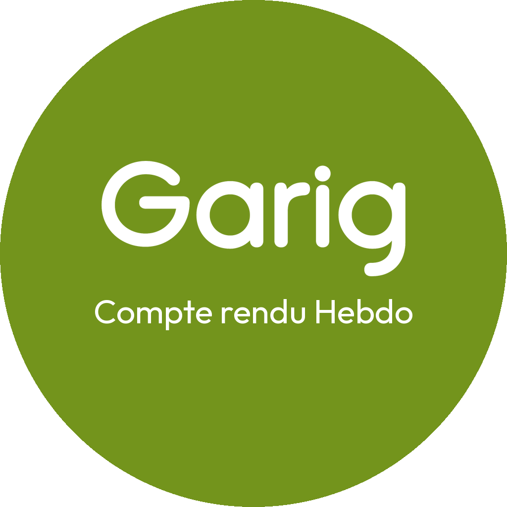
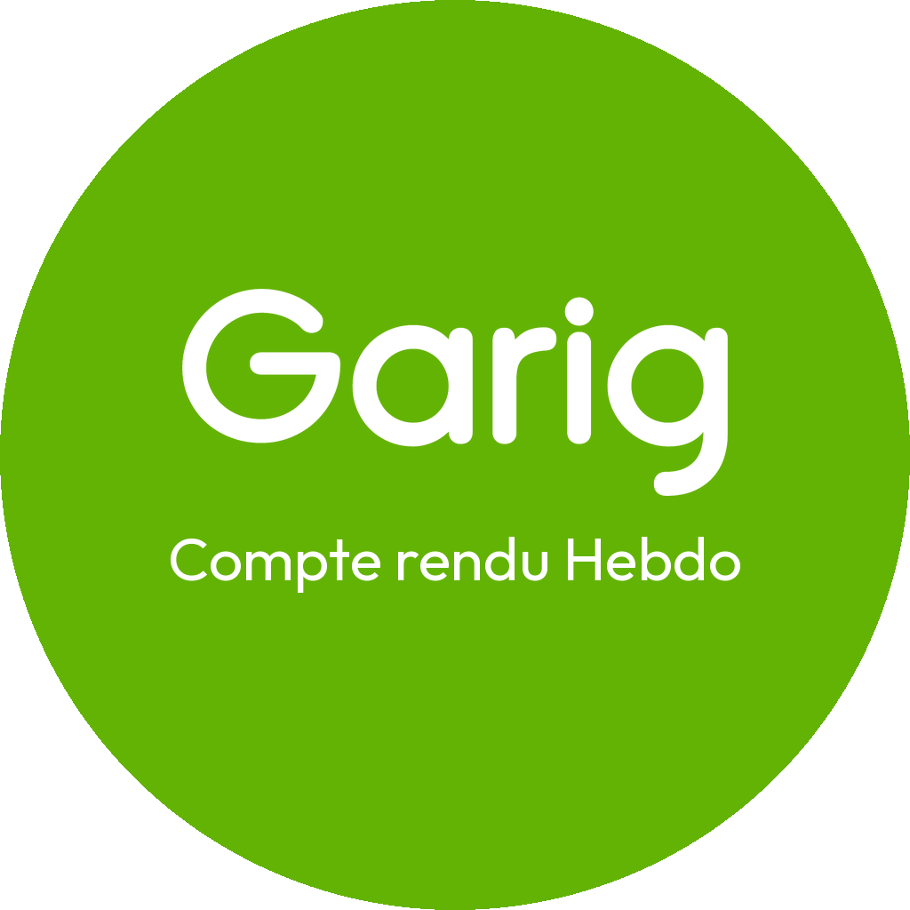
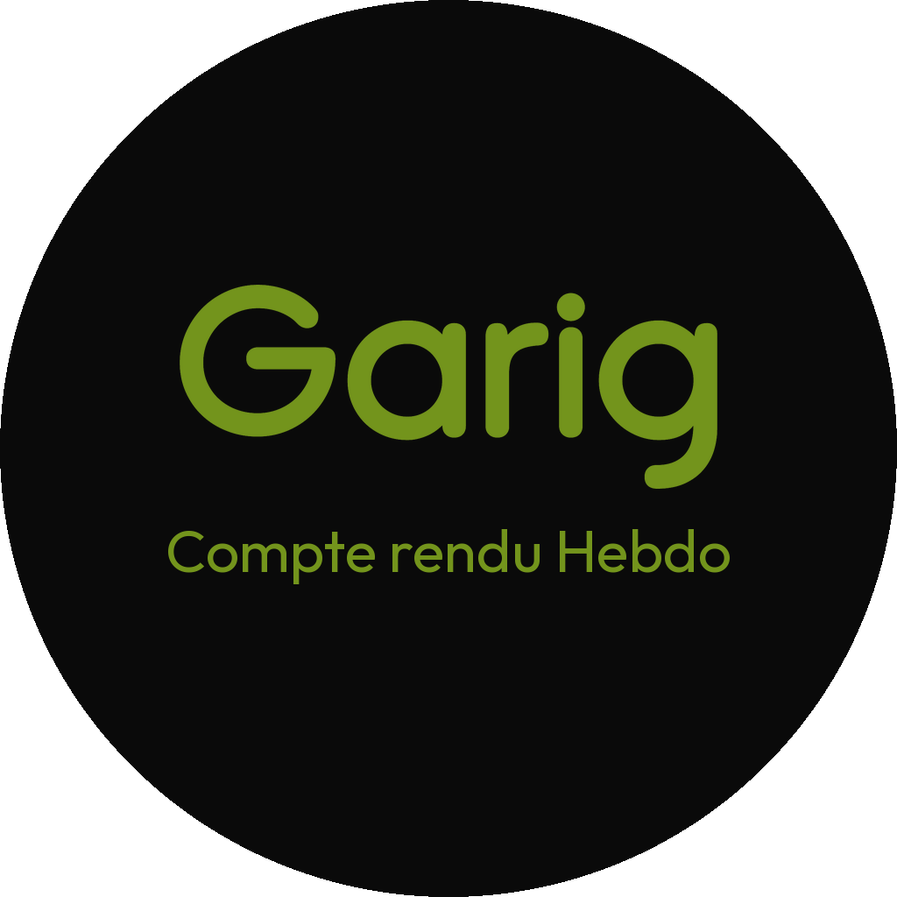
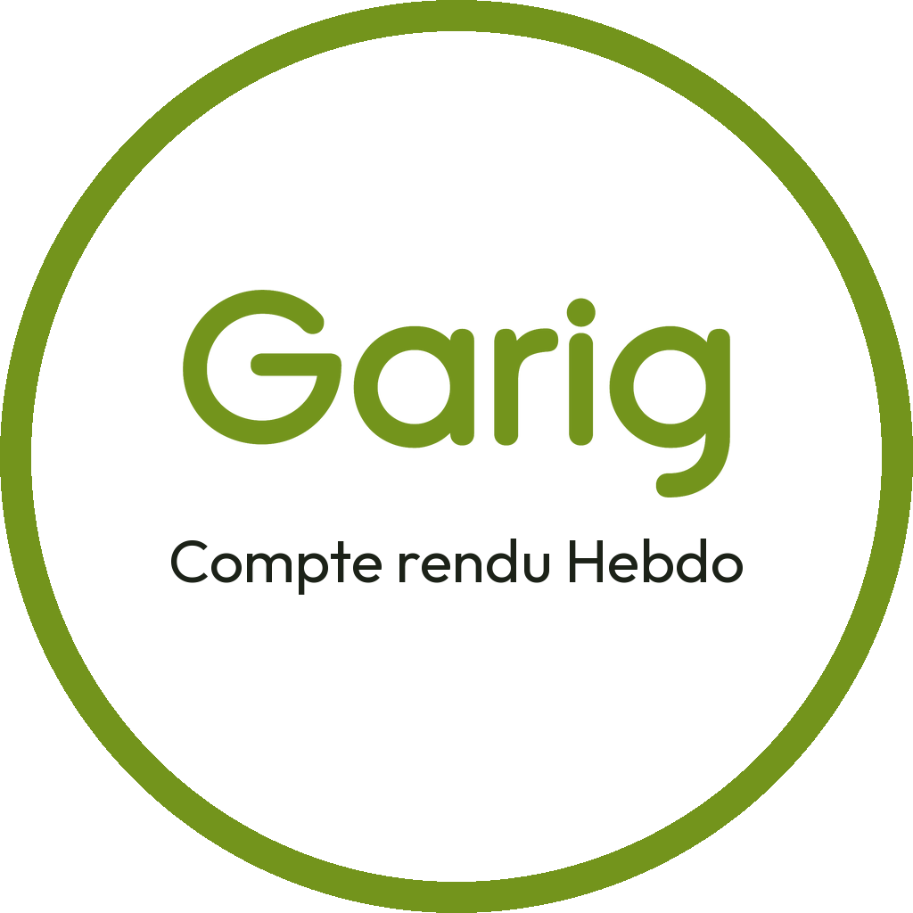
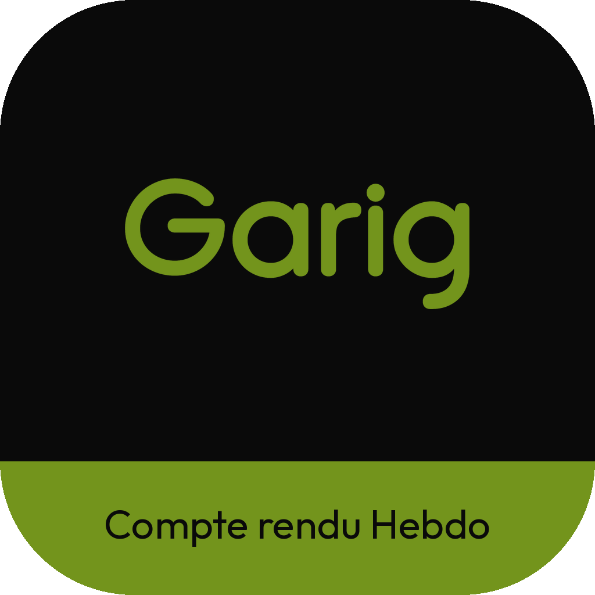

Le lettrage « Garig » est repris pixel pour pixel du logo, pas recomposé dans une police approchante. La ligne « Cuisine de Chef… » a été retirée et remplacée par « Compte rendu Hebdo ». Chaque pastille est montrée en grand, puis aux tailles réelles où elle sera vue : écran d'accueil, barre de favoris, onglet.

Pastille 1
Disque vert olive
Le logo fourni, tel quel, avec la ligne remplacée. Le choix par défaut : c'est la pastille que tout le monde reconnaîtra comme Garig.
icons/pastille-1-olive.png
fond clair
fond sombre

Pastille 2
Disque vert vif
Le vert lumineux de la version doodle. Ressort davantage sur un fond d'écran sombre, un peu moins sur fond clair.
icons/pastille-2-vert-vif.png
fond clair
fond sombre

Pastille 3
Disque noir et vert
Lettrage et sous-titre verts sur noir. Le contraste le plus fort des cinq : reste lisible même réduite à 32 px.
icons/pastille-3-noir-vert.png
fond clair
fond sombre

Pastille 4
Disque blanc cerclé
Version claire, cernée de vert. À privilégier si l'icône côtoie beaucoup d'applications colorées.
icons/pastille-4-blanche.png
fond clair
fond sombre

Pastille 5
Carré arrondi noir et vert
Format d'icône d'application mobile : fond noir, lettrage vert, sous-titre sur un bandeau vert. C'est la pastille retenue, celle qui est déclinée en jeu d'icônes.